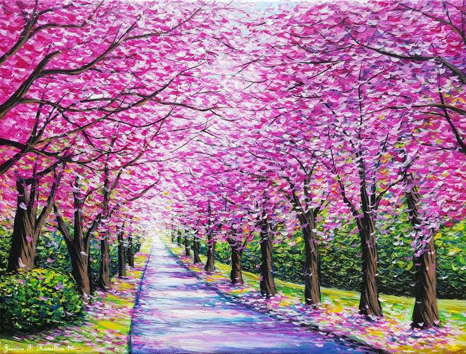

Art Description:
Two Love Birds Landscape Canvas Wall Art Oil Painting.
This painting will definitely lift the mood of the environment of your home with lots of positivity.
Art Description:
Lord Buddha paintings have brought in bliss, prosperity, and wealth. Both Hindus and Buddhists believe in this.
Feng Shui and Vastu say that paintings of Lord Buddha have the power to increase the flow of Chi and this in turn brings prosperity and good fortune.

Art Description:
Flowers provide color and liveliness ie. Flowers help to create environments that are full of color and vitality, especially flowers with vibrant colors, such as pink and red.
This painting would bring in more colours in one's life.